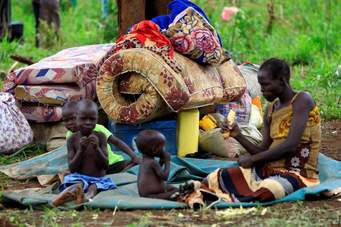
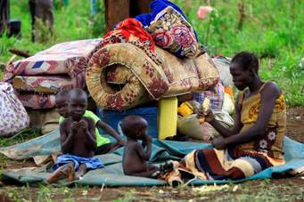

South Sudan Civil War
15th December 2013:
On this day; we became vampires eating and killing our own species. We lost our beloved and dear ones (the people that didn't deserve to die yet), it was such a sorrowful day but i believe that the Lord Almighy will put everything into norm. Lets just do one thing that is vital and it is to plant the seed of love and unity once again among us because the bible says there is time for everything; time to be born and time to die, time for peace and time for war.
Lets jut continue watering thatseed of love and unity even if there are difficulties; thats why people say we dont grow when things are easy instead they have to be tough and harsh
.
Then when it grows we shall all become one again and we shall be the witness of rapid development in our beloved country, South Sudan.

 
